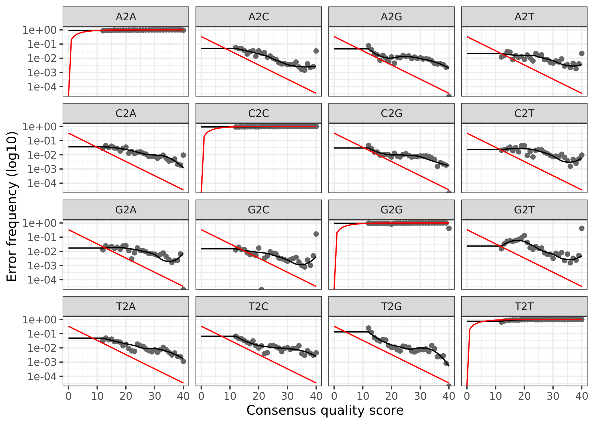

Click here for setup information.
knitr::opts_chunk$set(echo = TRUE, eval = FALSE)
set.seed(919191)
#pacman::p_depends(ape, local = TRUE)
#pacman::p_depends_reverse(ape, local = TRUE)
library(dada2); packageVersion("dada2")[1] '1.18.0'library(ShortRead); packageVersion("ShortRead")[1] '1.48.0'library(ggplot2); packageVersion("ggplot2")[1] '3.3.3'pacman::p_load(rmarkdown, DT, gridExtra, grid,
install = FALSE, update = FALSE)
options(scipen=999)
knitr::opts_current$get(c(
"cache",
"cache.path",
"cache.rebuild",
"dependson",
"autodep"
))$cache
[1] 0
$cache.path
[1] "dada2_cache/html5/"
$cache.rebuild
[1] FALSE
$dependson
NULL
$autodep
[1] FALSEremove(list = ls())Prerequisites
In order to run this workflow, you either need the raw data, available on the figshare project site, or the trimmed data, available from the ENA under project accession number … See the Data Availability page for complete details.
This workflow is how we processed our 16S rRNA and ITS data sets using DADA2 (Callahan et al. 2016) from samples collected in 2018. Workflow construction is based on the DADA2 Pipeline Tutorial (1.8) and the primer identification section of the DADA2 ITS Pipeline Workflow (1.8).
16s rRNA Data
NOTE: The reverse reads for 16s rRNA data set are unusable, therefore this workflow deals with forward reads only.
We will screen the forward reads for reverse primers and show the quality plots of the reverse reads at the beginning of the workflow. After that, reverse reads are not used.
Overview
Sequence Files & Samples
We sequenced a total of 15 samples collected from 10 different plots at a single depth in each plot.
Workflow
The workflow consists of the following steps:
| Step | Command | What we’re doing |
|---|---|---|
| 1 | multiple | prepare input file names & paths |
| 2 | multiple | Define primers (all orientations) |
| 3 | cutadapt |
Remove primers |
| 4 | filterAndTrim() |
assess quality & filter reads |
| 5 | learnErrors() |
generate an error model for the data |
| 6 | derepFastq |
dereplicate sequences |
| 7 | dada() |
infer ASVs on both forward & reverse reads independently |
| 8 | makeSequenceTable() |
generate a count table |
| 9 | removeBimeraDenovo() |
screen for & remove chimeras |
| 10 | track reads through workflow | |
| 11 | assignTaxonomy() |
assign taxonomy & finish workflow |
| 12 | save.image() |
save an image of seqtab & taxtab for next part of workflow |
1. Set Working Environment
Next, we need to setup the working environment by renaming the fastq files and defining a path for the working directory.
Rename samples
To make the parsing easier, we will eliminate the lane and well number from each sample. If you do not wish to do that you will need to adjust the code accordingly. I am positive there are more elegant ways of doing this.
CAUTION. If you use this for your own data, please check that this code works on a few backup files before proceeding.
setwd("RAW")
orig_fastq <- list.files(pattern = "*.fastq.gz")
newname_fastq <- gsub("_S.*_L001", "", orig_fastq)
newname_fastq <- gsub("_001", "", newname_fastq)
file.rename(orig_fastq, newname_fastq)
setwd("../")path <- "RAW"
head(list.files(path))[1] "P1_R1.fastq.gz" "P1_R2.fastq.gz" "P1-8C_R1.fastq.gz"
[4] "P1-8C_R2.fastq.gz" "P10_R1.fastq.gz" "P10_R2.fastq.gz" Then, we generate matched lists of the forward and reverse read files. We also parse out the sample name.
fnFs <- sort(list.files(path, pattern = "_R1.fastq.gz", full.names = TRUE))
fnRs <- sort(list.files(path, pattern = "_R2.fastq.gz", full.names = TRUE))p1a <- plotQualityProfile(fnFs[1:15], aggregate = TRUE)
p2a <- plotQualityProfile(fnRs[1:15], aggregate = TRUE)
p3a <- grid.arrange(p1a, p2a, nrow = 1)
ggsave("plot_qscores_2018a.png", p3a, width = 7, height = 3)Unfortunately, the reverse reads are unusable.

Aggregated quality score plots for forward reads & reverse reads.
2. Define Primers
Before we start the DADA2 workflow we need to run catadapt (Martin 2011) on all fastq.gz files to trim the primers. For this part of the study we used the primer pair 505F (GTGCCAGCMGCCGCGGTAA) and 806R (GGACTACHVGGGTWTCTAAT) (Caporaso et al. 2011) which should yield an amplicon length of about 253 bp.
First we define the primers.
FWD <- "GTGCCAGCMGCCGCGGTAA"
REV <- "GGACTACHVGGGTWTCTAAT"Next, we check the presence and orientation of these primers in the data. I started doing this for ITS data because of primer read-through but I really like the general idea of doing it just to make sure nothing funny is going of with the data.
To do this we will create all orientations of the input primer sequences. In other words the Forward, Complement, Reverse, and Reverse Complement variations.
allOrients <- function(primer) {
require(Biostrings)
dna <- DNAString(primer)
orients <- c(Forward = dna,
Complement = complement(dna),
Reverse = reverse(dna),
RevComp = reverseComplement(dna))
return(sapply(orients, toString))
}
FWD.orients <- allOrients(FWD)
REV.orients <- allOrients(REV)
FWD.orients
REV.orients Forward Complement Reverse
"GTGCCAGCMGCCGCGGTAA" "CACGGTCGKCGGCGCCATT" "AATGGCGCCGMCGACCGTG"
RevComp
"TTACCGCGGCKGCTGGCAC"
Forward Complement Reverse
"GGACTACHVGGGTWTCTAAT" "CCTGATGDBCCCAWAGATTA" "TAATCTWTGGGVHCATCAGG"
RevComp
"ATTAGAWACCCBDGTAGTCC"Now we do a little pre-filter step to eliminate ambiguous bases (Ns) because Ns make mapping of short primer sequences difficult. This step removes any reads with Ns. Again, set some files paths, this time for the filtered reads.
fnFs.filtN <- file.path(path, "filtN", basename(fnFs))
filterAndTrim(fnFs, fnFs.filtN,
maxN = 0, multithread = TRUE)Nice. Time to assess the number of times a primer (and all possible primer orientation) appear in the forward and reverse reads. According to the workflow, counting the primers on one set of paired end fastq files is sufficient to see if there is a problem. This assumes that all the files were created using the same library prep. Basically for both primers, we will search for all four orientations in both forward and reverse reads. Since this is 16S rRNA we do not anticipate any issues but it is worth checking.
primerHits <- function(primer, fn) {
# Counts number of reads in which the primer is found
nhits <- vcountPattern(primer, sread(readFastq(fn)), fixed = FALSE)
return(sum(nhits > 0))
}Forward primers
rbind(FWD.ForwardReads = sapply(FWD.orients, primerHits,
fn = fnFs.filtN[[sampnum]])) Forward Complement Reverse RevComp
FWD.ForwardReads 74707 0 0 0Reverse primers
rbind(REV.ForwardReads = sapply(REV.orients, primerHits,
fn = fnFs.filtN[[sampnum]])) Forward Complement Reverse RevComp
REV.ForwardReads 0 0 0 165As expected, forward primers predominantly in the forward reads and very little evidence of reverse primers.
3. Remove Primers
Now we can run catadapt (Martin 2011) to remove the primers from the fastq sequences. A little setup first. If this command executes successfully it means R has found cutadapt.
cutadapt <- "/Users/rad/miniconda3/envs/cutadapt/bin/cutadapt"
system2(cutadapt, args = "--version") # Run shell commands from R2.8We set paths and trim the forward primer and the reverse-complement of the reverse primer off of R1 (forward reads) and trim the reverse primer and the reverse-complement of the forward primer off of R2 (reverse reads).
path.cut <- file.path(path, "cutadapt")
if(!dir.exists(path.cut)) dir.create(path.cut)
fnFs.cut <- file.path(path.cut, basename(fnFs))
FWD.RC <- dada2:::rc(FWD)
REV.RC <- dada2:::rc(REV)
R1.flags <- paste("-g", FWD, "-a", REV.RC)
for(i in seq_along(fnFs)) {system2(cutadapt,
args = c(R1.flags,
"-m", 20, "-n", 2, "-e", 0.12,
"-o", fnFs.cut[i],
fnFs.filtN[i]))}This is cutadapt 2.8 with Python 3.7.6
Command line parameters: -g GTGCCAGCMGCCGCGGTAA -a ATTAGAWACCCBDGTAGTCC -m 20 -n 2 -e 0.12 -o RAW/cutadapt/P1_R1.fastq.gz RAW/filtN/P1_R1.fastq.gzNote. If the code above removes all of the base pairs in a sequence, you will get downstream errors unless you set the -m flag. This flag sets the minimum length and reads shorter than this will be discarded. Without this flag, reads of length 0 will be kept and cause issues. Also, a lot of output will be written to the screen by cutadapt!.
We can now count the number of primers in the sequences from the output of cutadapt.
rbind(
FWD.ForwardReads = sapply(FWD.orients, primerHits, fn = fnFs.cut[[sampnum]]),
REV.ForwardReads = sapply(REV.orients, primerHits, fn = fnFs.cut[[sampnum]])) Forward Complement Reverse RevComp
FWD.ForwardReads 0 0 0 0
REV.ForwardReads 0 0 0 0Basically, primers are no longer detected in the cutadapted reads. Now, for each sample, we can take a look at how the pre-filtering step and primer removal affected the total number of raw reads.
4. Quality Assessment & Filtering
We need the forward and reverse fastq file names and the sample names.
cutFs <- sort(list.files(path.cut, pattern = "_R1.fastq.gz",
full.names = TRUE))
get.sample.name <- function(fname) strsplit(basename(fname), "_")[[1]][1]
sample.names <- unname(sapply(cutFs, get.sample.name))
head(sample.names)c("P1", "P1-8C", "P10", "P2", "P3", "P3-8C")[1] "P1" "P1-8C" "P10" "P2" "P3" "P3-8C"First let’s look at the quality of our reads. The numbers in brackets specify which samples to view. Here we are looking at an aggregate plot of all data (except the negative control)
Quality plots
p1 <- plotQualityProfile(cutFs[1:15], aggregate = TRUE)
ggsave("ssu18_plot_qscores.png", p1, width = 7, height = 3)
ggsave("ssu18_plot_qscores.png", p1)
Aggregated quality score plots for forward reads.
The forward reads look good.
Filtering
First, we again make some path variables and setup a new directory of filtered reads.
filtFs <- file.path(path.cut, "filtered", basename(cutFs))And then we trim the reads.
out <- filterAndTrim(cutFs, filtFs,
maxN = 0, maxEE = 2,
truncQ = 2, rm.phix = TRUE,
compress = TRUE, multithread = 20)
outAnd here is a table of how the filtering step affected the number of reads in each sample. As you can see, there are a few samples that started with a low read count to begin with—we will likely remove those samples at some point.
5. Learn Error Rates
Now it is time to assess the error rate of the data. The DADA2 algorithm uses a parametric error model. Every amplicon data set has a different set of error rates and the learnErrors method learns this error model from the data. It does this by alternating estimation of the error rates and inference of sample composition until they converge on a jointly consistent solution. The algorithm begins with an initial guess, for which the maximum possible error rates in the data are used.
Forward Reads
errF <- learnErrors(filtFs, multithread = FALSE)103002523 total bases in 443994 reads from 6 samples will be used for learning the error rates.plotErrors(errF, nominalQ=TRUE)The error rates for each possible transition (A to C, A to G, etc.) are shown. Points are the observed error rates for each consensus quality score. The black line shows the estimated error rates after convergence of the machine-learning algorithm. The red line shows the error rates expected under the nominal definition of the Q-score. Here the estimated error rates (black line) are a good fit to the observed rates (points), and the error rates drop with increased quality as expected.
6. Dereplicate Reads
Now we can use derepFastq to identify the unique sequences in the forward and reverse fastq files.
Forward Reads
derepFs <- derepFastq(filtFs)
names(derepFs) <- sample.names
Detailed results of derep forward reads
Dereplicating sequence entries in Fastq file: RAW/cutadapt/filtered/P1_R1.fastq.gz
Encountered 39950 unique sequences from 79804 total sequences read.
Dereplicating sequence entries in Fastq file: RAW/cutadapt/filtered/P1-8C_R1.fastq.gz
Encountered 31163 unique sequences from 72760 total sequences read.
Dereplicating sequence entries in Fastq file: RAW/cutadapt/filtered/P10_R1.fastq.gz
Encountered 35274 unique sequences from 62598 total sequences read.
Dereplicating sequence entries in Fastq file: RAW/cutadapt/filtered/P2_R1.fastq.gz
Encountered 42119 unique sequences from 81240 total sequences read.
Dereplicating sequence entries in Fastq file: RAW/cutadapt/filtered/P3_R1.fastq.gz
Encountered 40336 unique sequences from 86732 total sequences read.
Dereplicating sequence entries in Fastq file: RAW/cutadapt/filtered/P3-8C_R1.fastq.gz
Encountered 31104 unique sequences from 60860 total sequences read.
Dereplicating sequence entries in Fastq file: RAW/cutadapt/filtered/P4_R1.fastq.gz
Encountered 35169 unique sequences from 63037 total sequences read.
Dereplicating sequence entries in Fastq file: RAW/cutadapt/filtered/P5_R1.fastq.gz
Encountered 27752 unique sequences from 54127 total sequences read.
Dereplicating sequence entries in Fastq file: RAW/cutadapt/filtered/P5-8C_R1.fastq.gz
Encountered 49045 unique sequences from 109421 total sequences read.
Dereplicating sequence entries in Fastq file: RAW/cutadapt/filtered/P6_R1.fastq.gz
Encountered 46853 unique sequences from 94740 total sequences read.
Dereplicating sequence entries in Fastq file: RAW/cutadapt/filtered/P7_R1.fastq.gz
Encountered 35363 unique sequences from 71678 total sequences read.
Dereplicating sequence entries in Fastq file: RAW/cutadapt/filtered/P7-8C_R1.fastq.gz
Encountered 35567 unique sequences from 73639 total sequences read.
Dereplicating sequence entries in Fastq file: RAW/cutadapt/filtered/P8_R1.fastq.gz
Encountered 38518 unique sequences from 72263 total sequences read.
Dereplicating sequence entries in Fastq file: RAW/cutadapt/filtered/P9_R1.fastq.gz
Encountered 43426 unique sequences from 89315 total sequences read.
Dereplicating sequence entries in Fastq file: RAW/cutadapt/filtered/P9-8C_R1.fastq.gz
Encountered 13673 unique sequences from 33000 total sequences read.
7. DADA2 & ASV Inference
At this point we are ready to apply the core sample inference algorithm (dada) to the filtered and trimmed sequence data. DADA2 offers three options for whether and how to pool samples for ASV inference.
If pool = TRUE, the algorithm will pool together all samples prior to sample inference.
If pool = FALSE, sample inference is performed on each sample individually.
If pool = "pseudo", the algorithm will perform pseudo-pooling between individually processed samples.
We tested all three methods through the full pipeline. Click the + to see the results of the test. For our final analysis, we chose pool = FALSE for this data set.
Show/hide Results of dada pooling options
Here are a few summary tables of results from the tests. Values are from the final sequence table prodcuced by each option.
| unpooled | psuedo | pooled | |
|---|---|---|---|
| no_reads | 937761 | 942031 | 906077 |
| no_asvs | 20332 | 21269 | 13206 |
| min_asv | 816 | 1248 | 2207 |
| max_asv | 3082 | 4155 | 7522 |
| n_samp_1 | 17122 | 17948 | 2430 |
| n_samp_2 | 1270 | 309 | 1283 |
| n_samp_3 | 586 | 265 | 890 |
| n_samp_4 | 357 | 238 | 797 |
| n_samp_5 | 215 | 250 | 752 |
| n_samp_6 | 161 | 245 | 694 |
| n_samp_7 | 130 | 253 | 711 |
| n_samp_8 | 84 | 275 | 705 |
| n_samp_9 | 102 | 229 | 717 |
| n_samp_10 | 63 | 235 | 733 |
| n_samp_11 | 55 | 210 | 715 |
| n_samp_12 | 60 | 213 | 726 |
| n_samp_13 | 36 | 225 | 750 |
| n_samp_14 | 42 | 205 | 730 |
| n_samp_15 | 49 | 169 | 573 |
| unpooled | psuedo | pooled | |
|---|---|---|---|
| P1 | 68037 | 68529 | 65521 |
| P1-8C | 60535 | 60699 | 57636 |
| P10 | 53625 | 53827 | 52032 |
| P2 | 70436 | 70436 | 67208 |
| P3 | 75183 | 75470 | 71954 |
| P3-8C | 53437 | 53134 | 51893 |
| P4 | 53813 | 54115 | 52133 |
| P5 | 47070 | 47328 | 45012 |
| P5-8C | 86841 | 87418 | 85245 |
| P6 | 81219 | 81416 | 78759 |
| P7 | 61742 | 62091 | 58740 |
| P7-8C | 62202 | 61917 | 58300 |
| P8 | 62171 | 62527 | 60245 |
| P9 | 76299 | 76671 | 72833 |
| unpooled | psuedo | pooled | |
|---|---|---|---|
| P1 | 2383 | 3385 | 6542 |
| P1-8C | 1618 | 2434 | 4927 |
| P10 | 2070 | 3055 | 6361 |
| P2 | 2278 | 3309 | 6809 |
| P3 | 2368 | 3277 | 6324 |
| P3-8C | 1593 | 2246 | 4658 |
| P4 | 2052 | 3086 | 6669 |
| P5 | 1672 | 2565 | 5275 |
| P5-8C | 2156 | 2946 | 5608 |
| P6 | 3082 | 4155 | 7522 |
| P7 | 2025 | 3049 | 6256 |
| P7-8C | 2167 | 2998 | 5592 |
| P8 | 2453 | 3446 | 6791 |
| P9 | 2402 | 3412 | 6779 |
| P9-8C | 816 | 1248 | 2207 |
dadaFs <- dada(derepFs, err = errF, multithread = TRUE, pool = FALSE)
Detailed results of dada on forward reads
Sample 1 - 79804 reads in 39950 unique sequences.
Sample 2 - 72760 reads in 31163 unique sequences.
Sample 3 - 62598 reads in 35274 unique sequences.
Sample 4 - 81240 reads in 42119 unique sequences.
Sample 5 - 86732 reads in 40336 unique sequences.
Sample 6 - 60860 reads in 31104 unique sequences.
Sample 7 - 63037 reads in 35169 unique sequences.
Sample 8 - 54127 reads in 27752 unique sequences.
Sample 9 - 109421 reads in 49045 unique sequences.
Sample 10 - 94740 reads in 46853 unique sequences.
Sample 11 - 71678 reads in 35363 unique sequences.
Sample 12 - 73639 reads in 35567 unique sequences.
Sample 13 - 72263 reads in 38518 unique sequences.
Sample 14 - 89315 reads in 43426 unique sequences.
Sample 15 - 33000 reads in 13673 unique sequences.
As an example, we can inspect the returned dada-class object for the forward and reverse reads from the sample #2:
dadaFs[[sampnum]]dada-class: object describing DADA2 denoising results
1759 sequence variants were inferred from 31163 input unique sequences.
Key parameters: OMEGA_A = 1e-40, OMEGA_C = 1e-40, BAND_SIZE = 16This output tells us how many true sequence variants the DADA2 algorithm inferred from the unique sequences, in this case the sample 2.
8. Construct Sequence Table
Now we construct an amplicon sequence variant (ASV) table.
seqtab <- makeSequenceTable(dadaFs)
dim(seqtab)[1] 15 14985table(nchar(getSequences(seqtab))) 22 23 24 25 27 41 66 73 120 149 185 190 193
2 1 1 2 1 1 1 1 1 1 1 9 1
198 200 201 202 208 209 211 215 217 220 221 222 223
1 1 1 1 1 1 1 1 2 4 14 21 8
224 225 227 228 229 230 231 232 233 234 238 251
3 4 6 4 5 9 20 21342 190 12 2 8 The sequence table is a matrix with rows corresponding to (and named by) the samples, and columns corresponding to (and named by) the sequence variants. We have 14985 sequence variants but also a range of sequence lengths. Since many of these sequence variants are singletons or doubletons, we can just select a range that corresponds to the expected amplicon length and eliminate the spurious reads.

seqtab.2 <- seqtab[,nchar(colnames(seqtab)) %in% seq(230,235)]
dim(seqtab.2)[1] 15 21573table(nchar(getSequences(seqtab.2))) 230 231 232 233 234
9 20 21342 190 12 After removing the extreme length variants, we have 21573, a reduction of -6588 sequence variants.
9. Remove Chimeras
Even though the dada method corrects substitution and indel errors, chimeric sequences remain. According to the DADA2 documentation, the accuracy of sequence variants after denoising makes identifying chimeric ASVs simpler than when dealing with fuzzy OTUs. Chimeric sequences are identified if they can be exactly reconstructed by combining a left-segment and a right-segment from two more abundant parent sequences.
seqtab.nochim <- removeBimeraDenovo(seqtab.2,
method = "consensus",
multithread = 20,
verbose = TRUE)
dim(seqtab.nochim)Identified 1241 bimeras out of 21573 input sequences.[1] 15 20332sum(seqtab.nochim)/sum(seqtab.2)[1] 0.9596595Chimera checking removed an additional 1241 sequence variants however, when we account for the abundances of each variant, we see chimeras accounts for about 4.03405% of the merged sequence reads. Not bad.
The last thing we want to do is write the sequence table to an RDS file.
saveRDS(seqtab.nochim, "ssu18_seqtab.nochim.rds")10. Track Reads through Workflow
At this point we can look at the number of reads that made it through each step of the workflow for every sample.
getN <- function(x) sum(getUniques(x))
track <- cbind(out,
sapply(dadaFs, getN),
rowSums(seqtab.nochim))
colnames(track) <- c("input", "filtered", "denoisedF", "nonchim")
rownames(track) <- sample.namesAnd we can save a copy of the table for later use.
write.table(track, "ssu18_read_changes.txt",
sep = "\t", quote = FALSE, col.names=NA)11. Assign Taxonomy
The assignTaxonomy command implements the naive Bayesian classifier, so for reproducible results you need to set a random number seed (see issue #538). We did this at the beginning of the workflow. For taxonomic assignment, we are using the Silva version 138 (Quast et al. 2012). The developers of DADA2 maintain a formatted version of the database.
We will read in the RDS file containing the sequence table saved above. We also need to run remove(list = ls()) command, otherwise the final image we save will be huge. This way, the image only contains the sample data, seqtab, and taxtab after running removeBimeraDenovo.
remove(list = ls())
seqtab <- readRDS("ssu18_seqtab.nochim.rds")And then native Bayesian classifier against the Silva database.
tax_silva <- assignTaxonomy(
seqtab, "silva_nr_v138_train_set.fa.gz", multithread = TRUE)12. Save Image
And finally, we save an image for use in the analytic part of the workflow. This R data file will be needed as the input for the phyloseq portion of the workflow. See the Data Availability page for complete details on where to get this file.
save.image("ssu18_dada2_wf.rdata")R Session Information & Code
This workflow was run on the Smithsonian High Performance Cluster (SI/HPC), Smithsonian Institution. Below are the specific packages and versions used in this workflow using both sessionInfo() and devtools::session_info(). Click the arrow to see the details.
Show/hide R Session Info
sessionInfo()
R version 4.0.0 (2020-04-24)
Platform: x86_64-conda_cos6-linux-gnu (64-bit)
Running under: CentOS Linux 7 (Core)
Matrix products: default
BLAS/LAPACK: /home/scottjj/miniconda3/envs/R-4/lib/libopenblasp-r0.3.9.so
locale:
[1] LC_CTYPE=en_US.UTF-8 LC_NUMERIC=C
[3] LC_TIME=en_US.UTF-8 LC_COLLATE=en_US.UTF-8
[5] LC_MONETARY=en_US.UTF-8 LC_MESSAGES=en_US.UTF-8
[7] LC_PAPER=en_US.UTF-8 LC_NAME=C
[9] LC_ADDRESS=C LC_TELEPHONE=C
[11] LC_MEASUREMENT=en_US.UTF-8 LC_IDENTIFICATION=C
attached base packages:
[1] grid stats4 parallel stats graphics grDevices utils
[8] datasets methods base
other attached packages:
[1] gridExtra_2.3 ggplot2_3.3.0
[3] ShortRead_1.46.0 GenomicAlignments_1.24.0
[5] SummarizedExperiment_1.18.1 DelayedArray_0.14.0
[7] matrixStats_0.56.0 Biobase_2.48.0
[9] Rsamtools_2.4.0 GenomicRanges_1.40.0
[11] GenomeInfoDb_1.24.0 Biostrings_2.56.0
[13] XVector_0.28.0 IRanges_2.22.1
[15] S4Vectors_0.26.0 BiocParallel_1.22.0
[17] BiocGenerics_0.34.0 dada2_1.16.0
[19] Rcpp_1.0.4.6
loaded via a namespace (and not attached):
[1] plyr_1.8.6 RColorBrewer_1.1-2 pillar_1.4.4
[4] compiler_4.0.0 bitops_1.0-6 tools_4.0.0
[7] zlibbioc_1.34.0 lifecycle_0.2.0 tibble_3.0.1
[10] gtable_0.3.0 lattice_0.20-41 png_0.1-7
[13] pkgconfig_2.0.3 rlang_0.4.6 Matrix_1.2-18
[16] GenomeInfoDbData_1.2.3 withr_2.2.0 stringr_1.4.0
[19] hwriter_1.3.2 vctrs_0.3.0 glue_1.4.1
[22] R6_2.4.1 jpeg_0.1-8.1 latticeExtra_0.6-29
[25] reshape2_1.4.4 magrittr_1.5 scales_1.1.1
[28] ellipsis_0.3.1 colorspace_1.4-1 stringi_1.4.6
[31] RCurl_1.98-1.2 RcppParallel_5.0.1 munsell_0.5.0
[34] crayon_1.3.4
devtools::session_info()
─ Session info ───────────────────────────────────────────────────────────────
setting value
version R version 4.0.0 (2020-04-24)
os CentOS Linux 7 (Core)
system x86_64, linux-gnu
ui X11
language (EN)
collate en_US.UTF-8
ctype en_US.UTF-8
tz America/New_York
date 2020-06-17
─ Packages ───────────────────────────────────────────────────────────────────
package * version date lib source
assertthat 0.2.1 2019-03-21 [1] CRAN (R 4.0.0)
backports 1.1.7 2020-05-13 [1] CRAN (R 4.0.0)
Biobase * 2.48.0 2020-04-27 [1] Bioconductor
BiocGenerics * 0.34.0 2020-04-27 [1] Bioconductor
BiocParallel * 1.22.0 2020-04-27 [1] Bioconductor
Biostrings * 2.56.0 2020-04-27 [1] Bioconductor
bitops 1.0-6 2013-08-17 [1] CRAN (R 4.0.0)
callr 3.4.3 2020-03-28 [1] CRAN (R 4.0.0)
cli 2.0.2 2020-02-28 [1] CRAN (R 4.0.0)
colorspace 1.4-1 2019-03-18 [1] CRAN (R 4.0.0)
crayon 1.3.4 2017-09-16 [1] CRAN (R 4.0.0)
dada2 * 1.16.0 2020-04-27 [1] Bioconductor
DelayedArray * 0.14.0 2020-04-27 [1] Bioconductor
desc 1.2.0 2018-05-01 [1] CRAN (R 4.0.0)
devtools 2.3.0 2020-04-10 [1] CRAN (R 4.0.0)
digest 0.6.25 2020-02-23 [1] CRAN (R 4.0.0)
ellipsis 0.3.1 2020-05-15 [1] CRAN (R 4.0.0)
fansi 0.4.1 2020-01-08 [1] CRAN (R 4.0.0)
fs 1.4.1 2020-04-04 [1] CRAN (R 4.0.0)
GenomeInfoDb * 1.24.0 2020-04-27 [1] Bioconductor
GenomeInfoDbData 1.2.3 2020-05-22 [1] Bioconductor
GenomicAlignments * 1.24.0 2020-04-27 [1] Bioconductor
GenomicRanges * 1.40.0 2020-04-27 [1] Bioconductor
ggplot2 * 3.3.0 2020-03-05 [1] CRAN (R 4.0.0)
glue 1.4.1 2020-05-13 [1] CRAN (R 4.0.0)
gridExtra * 2.3 2017-09-09 [1] CRAN (R 4.0.0)
gtable 0.3.0 2019-03-25 [1] CRAN (R 4.0.0)
hwriter 1.3.2 2014-09-10 [1] CRAN (R 4.0.0)
IRanges * 2.22.1 2020-04-28 [1] Bioconductor
jpeg 0.1-8.1 2019-10-24 [1] CRAN (R 4.0.0)
lattice 0.20-41 2020-04-02 [1] CRAN (R 4.0.0)
latticeExtra 0.6-29 2019-12-19 [1] CRAN (R 4.0.0)
lifecycle 0.2.0 2020-03-06 [1] CRAN (R 4.0.0)
magrittr 1.5 2014-11-22 [1] CRAN (R 4.0.0)
Matrix 1.2-18 2019-11-27 [1] CRAN (R 4.0.0)
matrixStats * 0.56.0 2020-03-13 [1] CRAN (R 4.0.0)
memoise 1.1.0 2017-04-21 [1] CRAN (R 4.0.0)
munsell 0.5.0 2018-06-12 [1] CRAN (R 4.0.0)
pillar 1.4.4 2020-05-05 [1] CRAN (R 4.0.0)
pkgbuild 1.0.8 2020-05-07 [1] CRAN (R 4.0.0)
pkgconfig 2.0.3 2019-09-22 [1] CRAN (R 4.0.0)
pkgload 1.0.2 2018-10-29 [1] CRAN (R 4.0.0)
plyr 1.8.6 2020-03-03 [1] CRAN (R 4.0.0)
png 0.1-7 2013-12-03 [1] CRAN (R 4.0.0)
prettyunits 1.1.1 2020-01-24 [1] CRAN (R 4.0.0)
processx 3.4.2 2020-02-09 [1] CRAN (R 4.0.0)
ps 1.3.3 2020-05-08 [1] CRAN (R 4.0.0)
R6 2.4.1 2019-11-12 [1] CRAN (R 4.0.0)
RColorBrewer 1.1-2 2014-12-07 [1] CRAN (R 4.0.0)
Rcpp * 1.0.4.6 2020-04-09 [1] CRAN (R 4.0.0)
RcppParallel 5.0.1 2020-05-06 [1] CRAN (R 4.0.0)
RCurl 1.98-1.2 2020-04-18 [1] CRAN (R 4.0.0)
remotes 2.1.1 2020-02-15 [1] CRAN (R 4.0.0)
reshape2 1.4.4 2020-04-09 [1] CRAN (R 4.0.0)
rlang 0.4.6 2020-05-02 [1] CRAN (R 4.0.0)
rprojroot 1.3-2 2018-01-03 [1] CRAN (R 4.0.0)
Rsamtools * 2.4.0 2020-04-27 [1] Bioconductor
S4Vectors * 0.26.0 2020-04-27 [1] Bioconductor
scales 1.1.1 2020-05-11 [1] CRAN (R 4.0.0)
sessioninfo 1.1.1 2018-11-05 [1] CRAN (R 4.0.0)
ShortRead * 1.46.0 2020-04-27 [1] Bioconductor
stringi 1.4.6 2020-02-17 [1] CRAN (R 4.0.0)
stringr 1.4.0 2019-02-10 [1] CRAN (R 4.0.0)
SummarizedExperiment * 1.18.1 2020-04-30 [1] Bioconductor
testthat 2.3.2 2020-03-02 [1] CRAN (R 4.0.0)
tibble 3.0.1 2020-04-20 [1] CRAN (R 4.0.0)
usethis 1.6.1 2020-04-29 [1] CRAN (R 4.0.0)
vctrs 0.3.0 2020-05-11 [1] CRAN (R 4.0.0)
withr 2.2.0 2020-04-20 [1] CRAN (R 4.0.0)
XVector * 0.28.0 2020-04-27 [1] Bioconductor
zlibbioc 1.34.0 2020-04-27 [1] BioconductorITS Data
Overview
Sequence Files & Samples
We sequenced a total of 15 samples collected from 10 different plots at a single depth in each plot.
Workflow
Our workflow is pretty much ripped from the DADA2 ITS Workflow (1.8) on the DADA2 website. That webpage contains thorough explanations for each step so we will not repeat most of that here. For more details, check out the post. The workflow consists of the following steps:
| Step | Command | What we’re doing |
|---|---|---|
| 1 | multiple | prepare input file names & paths |
| 2 | multiple | Define primers (all orientations) |
| 3 | cutadapt |
Remove primers |
| 4 | filterAndTrim() |
assess quality & filter reads |
| 5 | learnErrors() |
generate an error model for the data |
| 6 | derepFastq |
dereplicate sequences |
| 7 | dada() |
infer ASVs on both forward & reverse reads independently |
| 8 | mergePairs() |
merge forward & reverse reads to further refine ASVs |
| 9 | makeSequenceTable() |
generate a count table |
| 10 | removeBimeraDenovo() |
screen for & remove chimeras |
| 11 | track reads through workflow | |
| 12 | assignTaxonomy() |
assign taxonomy & finish workflow |
| 13 | save.image() |
save an image of seqtab & taxtab for next part of workflow |
1. Set Working Environment
Next, we need to setup the working environment by renaming the fastq files and defining a path for the working directory.
Rename samples
To make the parsing easier, we will eliminate the lane and well number from each sample. If you do not wish to do that you will need to adjust the code accordingly. I am positive there are more elegant ways of doing this.
CAUTION. You should check that this code works on a few backup files before proceeding.
setwd("RAW")
orig_fastq <- list.files(pattern = "*.fastq.gz")
newname_fastq <- gsub("_S.*_L001", "", orig_fastq)
newname_fastq <- gsub("_001", "", newname_fastq)
file.rename(orig_fastq, newname_fastq)
setwd("../")path <- "RAW"
head(list.files(path))[1] "P1_R1.fastq.gz" "P1_R2.fastq.gz" "P1-8C_R1.fastq.gz"
[4] "P1-8C_R2.fastq.gz" "P10_R1.fastq.gz" "P10_R2.fastq.gz" Then, we generate matched lists of the forward and reverse read files. We also parse out the sample name.
fnFs <- sort(list.files(path, pattern = "_R1.fastq.gz", full.names = TRUE))
fnRs <- sort(list.files(path, pattern = "_R2.fastq.gz", full.names = TRUE))2. Define Primers
Before we start the DADA2 workflow we need to run catadapt (Martin 2011) on all fastq.gz files to trim the primers. For this part of the study we used the primer pair ITS1f (CTTGGTCATTTAGAGGAAGTAA) and ITS2 (GCTGCGTTCTTCATCGATGC)[REF] which should yield variable amplicon lengths between 100 to 400 bp. What we are looking for is potential read-through scenarios that are possible when sequencing the length variable ITS region as described in the DADA2 ITS Workflow (1.8). Please refer to this document for a complete explanation.
First we define the primers.
FWD <- "CTTGGTCATTTAGAGGAAGTAA"
REV <- "GCTGCGTTCTTCATCGATGC"Next, we check the presence and orientation of these primers in the data. To do this we will create all orientations of the input primer sequences. In other words the Forward, Complement, Reverse, and Reverse Complement variations.
allOrients <- function(primer) {
require(Biostrings)
dna <- DNAString(primer)
orients <- c(Forward = dna,
Complement = complement(dna),
Reverse = reverse(dna),
RevComp = reverseComplement(dna))
return(sapply(orients, toString))
}
FWD.orients <- allOrients(FWD)
REV.orients <- allOrients(REV)
FWD.orients
REV.orients Forward Complement Reverse
"CTTGGTCATTTAGAGGAAGTAA" "GAACCAGTAAATCTCCTTCATT" "AATGAAGGAGATTTACTGGTTC"
RevComp
"TTACTTCCTCTAAATGACCAAG"
Forward Complement Reverse
"GCTGCGTTCTTCATCGATGC" "CGACGCAAGAAGTAGCTACG" "CGTAGCTACTTCTTGCGTCG"
RevComp
"GCATCGATGAAGAACGCAGC"Now we do a little pre-filter step to eliminate ambiguous bases (Ns) because Ns make mapping of short primer sequences difficult. This step removes any reads with Ns. Again, set some files paths, this time for the filtered reads.
fnFs.filtN <- file.path(path, "filtN", basename(fnFs))
fnRs.filtN <- file.path(path, "filtN", basename(fnRs))
filterAndTrim(fnFs, fnFs.filtN, fnRs, fnRs.filtN,
maxN = 0, multithread = TRUE)Sweet. Time to assess the number of times a primer (and all possible primer orientation) appear in the forward and reverse reads. According to the workflow, counting the primers on one set of paired end fastq files is sufficient to see if there is a problem. This assumes that all the files were created using the same library prep. Basically for both primers, we will search for all four orientations in both forward and reverse reads
sampnum <- 1
primerHits <- function(primer, fn) {
# Counts number of reads in which the primer is found
nhits <- vcountPattern(primer, sread(readFastq(fn)), fixed = FALSE)
return(sum(nhits > 0))
}Forward primers
rbind(FWD.ForwardReads = sapply(FWD.orients, primerHits,
fn = fnFs.filtN[[sampnum]]),
FWD.ReverseReads = sapply(FWD.orients, primerHits,
fn = fnRs.filtN[[sampnum]])) Forward Complement Reverse RevComp
FWD.ForwardReads 48467 0 0 0
FWD.ReverseReads 0 0 0 5078Reverse primers
rbind(REV.ForwardReads = sapply(REV.orients, primerHits,
fn = fnFs.filtN[[sampnum]]),
REV.ReverseReads = sapply(REV.orients, primerHits,
fn = fnRs.filtN[[sampnum]])) Forward Complement Reverse RevComp
REV.ForwardReads 0 0 0 6237
REV.ReverseReads 43902 0 0 0What does this table mean? I wondered the same thing. Let’s break it down. Sample P1 had 50,894 sequences after the original filtering described earlier. The code searched the forward and reverse fastq files for all 8 primers. If we look at the two outputs, we see the forward primer is found in the forward reads in its forward orientation but also in some reverse reads in its reverse-complement orientation. The reverse primer is found in the reverse reads in its forward orientation but also in some forward reads in its reverse-complement orientation. This is due to read-through when the ITS region is short.
3. Remove Primers
Now we can run catadapt (Martin 2011) to remove the primers from the fastq sequences. A little setup first. If this command executes successfully it means R has found cutadapt.
cutadapt <- "/PATH/to/cutadapt"
system2(cutadapt, args = "--version") # Run shell commands from R2.8We set paths and trim the forward primer and the reverse-complement of the reverse primer off of R1 (forward reads) and trim the reverse primer and the reverse-complement of the forward primer off of R2 (reverse reads).
path.cut <- file.path(path, "cutadapt")
if(!dir.exists(path.cut)) dir.create(path.cut)
fnFs.cut <- file.path(path.cut, basename(fnFs))
fnRs.cut <- file.path(path.cut, basename(fnRs))
FWD.RC <- dada2:::rc(FWD)
REV.RC <- dada2:::rc(REV)
R1.flags <- paste("-g", FWD, "-a", REV.RC)
R2.flags <- paste("-G", REV, "-A", FWD.RC)
for(i in seq_along(fnFs)) {system2(cutadapt,
args = c(R1.flags, R2.flags,
"-m", 20, "-n", 2,
"-o", fnFs.cut[i],
"-p", fnRs.cut[i],
fnFs.filtN[i], fnRs.filtN[i]))}This is cutadapt 2.8 with Python 3.7.6
Command line parameters: -g CTTGGTCATTTAGAGGAAGTAA -a GCATCGATGAAGAACGCAGC -G GCTGCGTTCTTCATCGATGC -A TTACTTCCTCTAAATGACCAAG -m 20 -n 2 -o RAW/cutadapt/P1_R1.fastq.gz -p RAW/cutadapt/P1_R2.fastq.gz RAW/filtN/P1_R1.fastq.gz RAW/filtN/P1_R2.fastq.gzNote. If the code above removes all of the base pairs in a sequence, you will get downstream errors unless you set the -m flag. This flag sets the minimum length and reads shorter than this will be discarded. Without this flag, reads of length 0 will be kept and cause issues. Also, a lot of output will be written to the screen by cutadapt!
We can now count the number of primers in the sequences from the output of cutadapt.
rbind(
FWD.ForwardReads = sapply(FWD.orients, primerHits, fn = fnFs.cut[[sampnum]]),
FWD.ReverseReads = sapply(FWD.orients, primerHits, fn = fnRs.cut[[sampnum]]),
REV.ForwardReads = sapply(REV.orients, primerHits, fn = fnFs.cut[[sampnum]]),
REV.ReverseReads = sapply(REV.orients, primerHits, fn = fnRs.cut[[sampnum]])) Forward Complement Reverse RevComp
FWD.ForwardReads 0 0 0 0
FWD.ReverseReads 0 0 0 0
REV.ForwardReads 0 0 0 0
REV.ReverseReads 0 0 0 0Basically, primers are no longer detected in the cutadapted reads. Now, for each sample, we can take a look at how the pre-filtering step and primer removal affected the total number of raw reads.
4. Quality Assessment & Filtering
We need the forward and reverse fastq file names and the sample names.
cutFs <- sort(list.files(path.cut, pattern = "_R1.fastq.gz",
full.names = TRUE))
cutRs <- sort(list.files(path.cut, pattern = "_R2.fastq.gz",
full.names = TRUE))
get.sample.name <- function(fname) strsplit(basename(fname), "_")[[1]][1]
sample.names <- unname(sapply(cutFs, get.sample.name))
head(sample.names)[1] "P1" "P1-8C" "P10" "P2" "P3" "P3-8C"Quality plots
Then we inspect read quality.
p1 <- plotQualityProfile(cutFs[1:15], aggregate = TRUE)
p2 <- plotQualityProfile(cutRs[1:15], aggregate = TRUE)
p3 <- grid.arrange(p1, p2, nrow = 1)
ggsave("plot_qscores_2018.png", p3, width = 7, height = 3)
Aggregated quality score plots for forward (left) & reverse (right) reads.
Filtering
filtFs <- file.path(path.cut, "filtered", basename(cutFs))
filtRs <- file.path(path.cut, "filtered", basename(cutRs))We use a minLen value to get rid of very short length sequences.
out <- filterAndTrim(cutFs, filtFs, cutRs, filtRs,
maxN = 0, maxEE = c(2, 2), truncQ = 2,
minLen = 50, rm.phix = TRUE,
compress = TRUE, multithread = TRUE)
outAnd here is a table of how the filtering step affected the number of reads in each sample.
5. Learn Error Rates
Time to assess the error rate of the data. The rest of the workflow is very similar to the 16S workflows presented previously. So I will basically stop talking.
Forward Reads
errF <- learnErrors(filtFs, multithread = TRUE)108788735 total bases in 495784 reads from 11 samples will be used for learning the error rates.
109358094 total bases in 495784 reads from 11 samples will be used for learning the error rates.plotErrors(errF, nominalQ = TRUE)
Reverse Reads
errR <- learnErrors(filtRs, multithread = TRUE)109358094 total bases in 495784 reads from 11 samples will be used for learning the error rates.plotErrors(errR, nominalQ = TRUE)6. Dereplicate Reads
Forward Reads
derepFs <- derepFastq(filtFs, verbose = TRUE)
names(derepFs) <- sample.namesDetailed results of derep forward reads
Dereplicating sequence entries in Fastq file: RAW/cutadapt/filtered/P1_R1.fastq.gz
Encountered 7277 unique sequences from 35999 total sequences read.
Dereplicating sequence entries in Fastq file: RAW/cutadapt/filtered/P1-8C_R1.fastq.gz
Encountered 11366 unique sequences from 48230 total sequences read.
Dereplicating sequence entries in Fastq file: RAW/cutadapt/filtered/P10_R1.fastq.gz
Encountered 11714 unique sequences from 80877 total sequences read.
Dereplicating sequence entries in Fastq file: RAW/cutadapt/filtered/P2_R1.fastq.gz
Encountered 13088 unique sequences from 58956 total sequences read.
Dereplicating sequence entries in Fastq file: RAW/cutadapt/filtered/P3_R1.fastq.gz
Encountered 10180 unique sequences from 42563 total sequences read.
Dereplicating sequence entries in Fastq file: RAW/cutadapt/filtered/P3-8C_R1.fastq.gz
Encountered 4480 unique sequences from 17548 total sequences read.
Dereplicating sequence entries in Fastq file: RAW/cutadapt/filtered/P4_R1.fastq.gz
Encountered 12259 unique sequences from 68259 total sequences read.
Dereplicating sequence entries in Fastq file: RAW/cutadapt/filtered/P5_R1.fastq.gz
Encountered 160 unique sequences from 308 total sequences read.
Dereplicating sequence entries in Fastq file: RAW/cutadapt/filtered/P5-8C_R1.fastq.gz
Encountered 10436 unique sequences from 48518 total sequences read.
Dereplicating sequence entries in Fastq file: RAW/cutadapt/filtered/P6_R1.fastq.gz
Encountered 11230 unique sequences from 51055 total sequences read.
Dereplicating sequence entries in Fastq file: RAW/cutadapt/filtered/P7_R1.fastq.gz
Encountered 10316 unique sequences from 43471 total sequences read.
Dereplicating sequence entries in Fastq file: RAW/cutadapt/filtered/P7-8C_R1.fastq.gz
Encountered 2121 unique sequences from 9488 total sequences read.
Dereplicating sequence entries in Fastq file: RAW/cutadapt/filtered/P8_R1.fastq.gz
Encountered 9236 unique sequences from 41563 total sequences read.
Dereplicating sequence entries in Fastq file: RAW/cutadapt/filtered/P9_R1.fastq.gz
Encountered 9000 unique sequences from 35722 total sequences read.
Dereplicating sequence entries in Fastq file: RAW/cutadapt/filtered/P9-8C_R1.fastq.gz
Encountered 42 unique sequences from 85 total sequences read.
Reverse Reads
derepRs <- derepFastq(filtRs, verbose = TRUE)
names(derepRs) <- sample.namesDetailed results of derep reverse reads
Dereplicating sequence entries in Fastq file: RAW/cutadapt/filtered/P1_R2.fastq.gz
Encountered 13081 unique sequences from 35999 total sequences read.
Dereplicating sequence entries in Fastq file: RAW/cutadapt/filtered/P1-8C_R2.fastq.gz
Encountered 17965 unique sequences from 48230 total sequences read.
Dereplicating sequence entries in Fastq file: RAW/cutadapt/filtered/P10_R2.fastq.gz
Encountered 18610 unique sequences from 80877 total sequences read.
Dereplicating sequence entries in Fastq file: RAW/cutadapt/filtered/P2_R2.fastq.gz
Encountered 19600 unique sequences from 58956 total sequences read.
Dereplicating sequence entries in Fastq file: RAW/cutadapt/filtered/P3_R2.fastq.gz
Encountered 16145 unique sequences from 42563 total sequences read.
Dereplicating sequence entries in Fastq file: RAW/cutadapt/filtered/P3-8C_R2.fastq.gz
Encountered 7496 unique sequences from 17548 total sequences read.
Dereplicating sequence entries in Fastq file: RAW/cutadapt/filtered/P4_R2.fastq.gz
Encountered 19933 unique sequences from 68259 total sequences read.
Dereplicating sequence entries in Fastq file: RAW/cutadapt/filtered/P5_R2.fastq.gz
Encountered 199 unique sequences from 308 total sequences read.
Dereplicating sequence entries in Fastq file: RAW/cutadapt/filtered/P5-8C_R2.fastq.gz
Encountered 18495 unique sequences from 48518 total sequences read.
Dereplicating sequence entries in Fastq file: RAW/cutadapt/filtered/P6_R2.fastq.gz
Encountered 17216 unique sequences from 51055 total sequences read.
Dereplicating sequence entries in Fastq file: RAW/cutadapt/filtered/P7_R2.fastq.gz
Encountered 17111 unique sequences from 43471 total sequences read.
Dereplicating sequence entries in Fastq file: RAW/cutadapt/filtered/P7-8C_R2.fastq.gz
Encountered 3809 unique sequences from 9488 total sequences read.
Dereplicating sequence entries in Fastq file: RAW/cutadapt/filtered/P8_R2.fastq.gz
Encountered 14140 unique sequences from 41563 total sequences read.
Dereplicating sequence entries in Fastq file: RAW/cutadapt/filtered/P9_R2.fastq.gz
Encountered 14856 unique sequences from 35722 total sequences read.
Dereplicating sequence entries in Fastq file: RAW/cutadapt/filtered/P9-8C_R2.fastq.gz
Encountered 45 unique sequences from 85 total sequences read.
7. DADA2 & ASV Inference
At this point we are ready to apply the core sample inference algorithm (dada) to the filtered and trimmed sequence data. DADA2 offers three options for whether and how to pool samples for ASV inference.
If pool = TRUE, the algorithm will pool together all samples prior to sample inference.
If pool = FALSE, sample inference is performed on each sample individually.
If pool = "pseudo", the algorithm will perform pseudo-pooling between individually processed samples.
We tested all three methods through the full pipeline. Click the + to see the results of the test. For our final analysis, we chose pool = TRUE for this data set.
Show/hide Results of dada pooling options
Here are a few summary tables of results from the tests. Values are from the final sequence table prodcuced by each option.
| unpooled | psuedo | pooled | |
|---|---|---|---|
| no_reads | 500415 | 521309 | 491143 |
| no_asvs | 4322 | 4348 | 3357 |
| min_asv | 6 | 10 | 14 |
| max_asv | 692 | 817 | 1017 |
| n_samp_1 | 3186 | 3176 | 1247 |
| n_samp_2 | 598 | 401 | 711 |
| n_samp_3 | 239 | 250 | 443 |
| n_samp_4 | 123 | 172 | 289 |
| n_samp_5 | 48 | 118 | 204 |
| n_samp_6 | 45 | 82 | 123 |
| n_samp_7 | 23 | 42 | 102 |
| n_samp_8 | 22 | 32 | 86 |
| n_samp_9 | 16 | 26 | 49 |
| n_samp_10 | 3 | 11 | 32 |
| n_samp_11 | 4 | 11 | 24 |
| n_samp_12 | 7 | 15 | 15 |
| n_samp_13 | 4 | 7 | 23 |
| n_samp_14 | 3 | 3 | 7 |
| n_samp_15 | 1 | 2 | 2 |
| unpooled | psuedo | pooled | |
|---|---|---|---|
| P1 | 29683 | 32793 | 29794 |
| P1-8C | 42959 | 43591 | 41880 |
| P10 | 64981 | 78039 | 64636 |
| P2 | 51414 | 51894 | 51144 |
| P3 | 38437 | 38589 | 38374 |
| P3-8C | 14909 | 15045 | 14188 |
| P4 | 56662 | 57911 | 56593 |
| P5 | 226 | 237 | 296 |
| P5-8C | 41453 | 42395 | 35600 |
| P6 | 45755 | 45913 | 45850 |
| P7 | 37637 | 37946 | 36063 |
| P7-8C | 8953 | 8984 | 9172 |
| P8 | 38087 | 38297 | 38371 |
| P9 | 29184 | 29601 | 29102 |
| P9-8C | 75 | 74 | 80 |
| unpooled | psuedo | pooled | |
|---|---|---|---|
| P1 | 439 | 575 | 945 |
| P1-8C | 607 | 655 | 719 |
| P10 | 561 | 642 | 812 |
| P2 | 692 | 817 | 1011 |
| P3 | 538 | 624 | 765 |
| P3-8C | 282 | 307 | 349 |
| P4 | 641 | 771 | 1017 |
| P5 | 29 | 49 | 95 |
| P5-8C | 535 | 548 | 616 |
| P6 | 650 | 745 | 954 |
| P7 | 615 | 708 | 867 |
| P7-8C | 119 | 145 | 335 |
| P8 | 546 | 607 | 702 |
| P9 | 589 | 653 | 745 |
| P9-8C | 6 | 10 | 14 |
Forward Reads
dadaFs <- dada(derepFs, err = errF, pool = TRUE, multithread = TRUE)15 samples were pooled: 582642 reads in 102887 unique sequences.dadaFs[[sampnum]]dada-class: object describing DADA2 denoising results
1175 sequence variants were inferred from 7277 input unique sequences.
Key parameters: OMEGA_A = 1e-40, OMEGA_C = 1e-40, BAND_SIZE = 16Reverse Reads
dadaRs <- dada(derepRs, err = errR, pool = TRUE, multithread = TRUE)15 samples were pooled: 582642 reads in 174866 unique sequences.dadaRs[[sampnum]]dada-class: object describing DADA2 denoising results
1116 sequence variants were inferred from 13081 input unique sequences.
Key parameters: OMEGA_A = 1e-40, OMEGA_C = 1e-40, BAND_SIZE = 16save.image("pre_merge_its_2018.rdata")8. Merge Paired Reads
mergers <- mergePairs(dadaFs, derepFs, dadaRs, derepRs, verbose=TRUE)Detailed results of merging reads
29795 paired-reads (in 946 unique pairings) successfully merged out of 32193 (in 1177 pairings) input.
41880 paired-reads (in 719 unique pairings) successfully merged out of 46715 (in 941 pairings) input.
64805 paired-reads (in 815 unique pairings) successfully merged out of 66771 (in 1015 pairings) input.
Duplicate sequences in merged output.
51144 paired-reads (in 1011 unique pairings) successfully merged out of 57613 (in 1325 pairings) input.
38442 paired-reads (in 767 unique pairings) successfully merged out of 41985 (in 994 pairings) input.
14188 paired-reads (in 349 unique pairings) successfully merged out of 16981 (in 452 pairings) input.
56594 paired-reads (in 1018 unique pairings) successfully merged out of 64411 (in 1306 pairings) input.
296 paired-reads (in 95 unique pairings) successfully merged out of 301 (in 100 pairings) input.
35713 paired-reads (in 619 unique pairings) successfully merged out of 41006 (in 786 pairings) input.
45851 paired-reads (in 955 unique pairings) successfully merged out of 50174 (in 1240 pairings) input.
36121 paired-reads (in 870 unique pairings) successfully merged out of 41541 (in 1135 pairings) input.
Duplicate sequences in merged output.
9172 paired-reads (in 335 unique pairings) successfully merged out of 9403 (in 402 pairings) input.
38392 paired-reads (in 704 unique pairings) successfully merged out of 40897 (in 886 pairings) input.
29155 paired-reads (in 748 unique pairings) successfully merged out of 34979 (in 990 pairings) input.
Duplicate sequences in merged output.
80 paired-reads (in 14 unique pairings) successfully merged out of 82 (in 16 pairings) input.
9. Construct Sequence Table
seqtabF <- makeSequenceTable(mergers)
dim(seqtabF)[1] 15 3364table(nchar(getSequences(seqtabF)))130 131 132 133 136 139 140 141 143 144 146 147 148 149 150 151 152 153 154 155
2 2 1 1 1 1 1 3 2 1 3 5 5 4 5 5 3 2 5 4
156 159 160 161 163 164 165 166 167 168 169 170 171 172 173 174 175 176 177 178
1 2 1 1 2 2 4 9 2 1 2 5 5 5 8 9 2 5 10 13
179 180 181 182 183 184 185 186 187 188 189 190 191 192 193 194 195 196 197 198
13 14 11 14 12 15 19 12 12 13 9 22 11 11 12 15 17 13 10 11
199 200 201 202 203 204 205 206 207 208 209 210 211 212 213 214 215 216 217 218
22 16 10 11 13 17 10 8 10 12 13 7 20 18 24 30 39 38 20 19
219 220 221 222 223 224 225 226 228 229 230 231 232 233 234 235 236 237 238 239
12 18 21 23 23 29 32 32 6 48 4 73 20 27 29 19 31 33 30 29
240 241 242 243 244 245 246 247 248 249 250 251 252 253 254 255 256 257 258 259
35 21 36 16 16 18 17 25 22 29 17 27 28 22 20 18 28 19 28 25
260 261 262 263 264 265 266 267 268 269 270 271 272 273 274 275 276 277 278 279
23 11 15 13 16 18 23 17 12 12 16 15 32 17 22 21 21 18 16 17
280 281 282 283 284 285 286 287 288 289 290 291 292 293 294 295 296 297 298 299
13 22 13 18 12 13 13 18 17 15 14 18 8 11 13 17 12 11 13 9
300 301 302 303 304 305 306 307 308 309 310 311 312 313 314 315 316 317 318 319
16 10 9 3 8 12 8 13 20 15 8 13 16 11 10 8 18 10 8 12
320 321 322 323 324 325 326 327 328 329 330 331 332 333 334 335 336 337 338 339
8 5 12 17 13 9 8 8 9 12 16 13 14 11 12 13 18 10 11 10
340 341 342 343 344 345 346 347 348 349 350 351 352 353 354 355 356 357 358 359
9 11 8 8 5 15 8 16 11 15 4 9 7 9 12 14 5 12 11 5
360 361 362 363 364 365 366 367 368 369 370 371 372 373 374 375 376 377 378 379
2 4 11 5 2 14 6 12 7 5 6 4 3 9 5 10 8 9 4 6
380 381 382 383 384 385 386 387 388 389 390 391 392 393 394 395 396 397 398 399
5 3 7 7 4 2 3 4 3 5 5 1 3 4 3 6 5 4 3 2
400 401 402 403 404 405 406 407 408 409 410 411 412 413 414 415 416 417 418 421
11 5 3 3 3 3 2 1 2 3 3 1 3 3 1 2 2 1 2 2
422 423 424 427 430 431 432 434 436 437 439 440 441 442 443 446 447 448
2 3 2 1 3 2 4 2 1 2 4 3 1 2 1 1 2 1

As expected, a wide range of length variability in the the amplified ITS region.
seqtab <- seqtabF[,nchar(colnames(seqtabF)) %in% seq(100,450)]
dim(seqtab)[1] 15 3364After removing the extreme length variants, we have 3364, a reduction of 0 sequence variants.
table(nchar(getSequences(seqtab)))10. Remove Chimeras
seqtab.nochim <- removeBimeraDenovo(seqtab,
method = "consensus",
multithread = TRUE, verbose = TRUE)
dim(seqtab.nochim)Identified 7 bimeras out of 3364 input sequences.[1] 15 3357sum(seqtab.nochim)/sum(seqtab.2)[1] 0.9990135Chimera checking removed an additional 7 sequence variants however, when we account for the abundances of each variant, we see chimeras accounts for about 0.09865% of the merged sequence reads. Curious.
table(colSums(seqtab.nochim>0)) 1 2 3 4 5 6 7 8 9 10 11 12 13 14 15
1247 711 443 289 204 123 102 86 49 32 24 15 23 7 2table(colSums(seqtab.nochim>0)) 14 95 335 349 616 702 719 745 765 812 867 945 954 1011 1017
1 1 1 1 1 1 1 1 1 1 1 1 1 1 1The last thing we want to do is write the sequence table to an RDS file.
saveRDS(seqtab.nochim, "its18_seqtab.nochim.rds")11. Track Reads through Workflow
12. Assign Taxonomy
For taxonomic classification, we used the UNITE (Nilsson et al. 2019) database, specifically the UNITE general FASTA release for Fungi (v. 04.02.2020) (Abarenkov et al. 2020).
tax <- assignTaxonomy(seqtab,
"sh_general_release_dynamic_s_04.02.2020_dev.fasta",
multithread = 20, tryRC = TRUE)
saveRDS(tax, "its18_tax_its.rds")UNITE fungal taxonomic reference detected.13. Save Image
save.image("its18_dada2_wf.rdata")R Session Information & Code
This workflow was run on the Smithsonian High Performance Cluster (SI/HPC), Smithsonian Institution. Below are the specific packages and versions used in this workflow using both sessionInfo() and devtools::session_info(). Click the arrow to see the details.
Show/hide R Session Info
sessionInfo()
R version 4.0.0 (2020-04-24)
Platform: x86_64-conda_cos6-linux-gnu (64-bit)
Running under: CentOS Linux 7 (Core)
Matrix products: default
BLAS/LAPACK: /home/scottjj/miniconda3/envs/R-4/lib/libopenblasp-r0.3.9.so
locale:
[1] LC_CTYPE=en_US.UTF-8 LC_NUMERIC=C
[3] LC_TIME=en_US.UTF-8 LC_COLLATE=en_US.UTF-8
[5] LC_MONETARY=en_US.UTF-8 LC_MESSAGES=en_US.UTF-8
[7] LC_PAPER=en_US.UTF-8 LC_NAME=C
[9] LC_ADDRESS=C LC_TELEPHONE=C
[11] LC_MEASUREMENT=en_US.UTF-8 LC_IDENTIFICATION=C
attached base packages:
[1] grid stats4 parallel stats graphics grDevices utils
[8] datasets methods base
other attached packages:
[1] gridExtra_2.3 ggplot2_3.3.0
[3] ShortRead_1.46.0 GenomicAlignments_1.24.0
[5] SummarizedExperiment_1.18.1 DelayedArray_0.14.0
[7] matrixStats_0.56.0 Biobase_2.48.0
[9] Rsamtools_2.4.0 GenomicRanges_1.40.0
[11] GenomeInfoDb_1.24.0 Biostrings_2.56.0
[13] XVector_0.28.0 IRanges_2.22.1
[15] S4Vectors_0.26.0 BiocParallel_1.22.0
[17] BiocGenerics_0.34.0 dada2_1.16.0
[19] Rcpp_1.0.4.6
loaded via a namespace (and not attached):
[1] plyr_1.8.6 RColorBrewer_1.1-2 pillar_1.4.4
[4] compiler_4.0.0 bitops_1.0-6 tools_4.0.0
[7] zlibbioc_1.34.0 lifecycle_0.2.0 tibble_3.0.1
[10] gtable_0.3.0 lattice_0.20-41 png_0.1-7
[13] pkgconfig_2.0.3 rlang_0.4.6 Matrix_1.2-18
[16] GenomeInfoDbData_1.2.3 withr_2.2.0 stringr_1.4.0
[19] hwriter_1.3.2 vctrs_0.3.0 glue_1.4.1
[22] R6_2.4.1 jpeg_0.1-8.1 latticeExtra_0.6-29
[25] reshape2_1.4.4 magrittr_1.5 scales_1.1.1
[28] ellipsis_0.3.1 colorspace_1.4-1 stringi_1.4.6
[31] RCurl_1.98-1.2 RcppParallel_5.0.1 munsell_0.5.0
[34] crayon_1.3.4
devtools::session_info()
─ Session info ───────────────────────────────────────────────────────────────
setting value
version R version 4.0.0 (2020-04-24)
os CentOS Linux 7 (Core)
system x86_64, linux-gnu
ui X11
language (EN)
collate en_US.UTF-8
ctype en_US.UTF-8
tz America/New_York
date 2020-06-04
─ Packages ───────────────────────────────────────────────────────────────────
package * version date lib source
assertthat 0.2.1 2019-03-21 [1] CRAN (R 4.0.0)
backports 1.1.7 2020-05-13 [1] CRAN (R 4.0.0)
Biobase * 2.48.0 2020-04-27 [1] Bioconductor
BiocGenerics * 0.34.0 2020-04-27 [1] Bioconductor
BiocParallel * 1.22.0 2020-04-27 [1] Bioconductor
Biostrings * 2.56.0 2020-04-27 [1] Bioconductor
bitops 1.0-6 2013-08-17 [1] CRAN (R 4.0.0)
callr 3.4.3 2020-03-28 [1] CRAN (R 4.0.0)
cli 2.0.2 2020-02-28 [1] CRAN (R 4.0.0)
colorspace 1.4-1 2019-03-18 [1] CRAN (R 4.0.0)
crayon 1.3.4 2017-09-16 [1] CRAN (R 4.0.0)
dada2 * 1.16.0 2020-04-27 [1] Bioconductor
DelayedArray * 0.14.0 2020-04-27 [1] Bioconductor
desc 1.2.0 2018-05-01 [1] CRAN (R 4.0.0)
devtools 2.3.0 2020-04-10 [1] CRAN (R 4.0.0)
digest 0.6.25 2020-02-23 [1] CRAN (R 4.0.0)
ellipsis 0.3.1 2020-05-15 [1] CRAN (R 4.0.0)
fansi 0.4.1 2020-01-08 [1] CRAN (R 4.0.0)
fs 1.4.1 2020-04-04 [1] CRAN (R 4.0.0)
GenomeInfoDb * 1.24.0 2020-04-27 [1] Bioconductor
GenomeInfoDbData 1.2.3 2020-05-22 [1] Bioconductor
GenomicAlignments * 1.24.0 2020-04-27 [1] Bioconductor
GenomicRanges * 1.40.0 2020-04-27 [1] Bioconductor
ggplot2 * 3.3.0 2020-03-05 [1] CRAN (R 4.0.0)
glue 1.4.1 2020-05-13 [1] CRAN (R 4.0.0)
gridExtra * 2.3 2017-09-09 [1] CRAN (R 4.0.0)
gtable 0.3.0 2019-03-25 [1] CRAN (R 4.0.0)
hwriter 1.3.2 2014-09-10 [1] CRAN (R 4.0.0)
IRanges * 2.22.1 2020-04-28 [1] Bioconductor
jpeg 0.1-8.1 2019-10-24 [1] CRAN (R 4.0.0)
lattice 0.20-41 2020-04-02 [1] CRAN (R 4.0.0)
latticeExtra 0.6-29 2019-12-19 [1] CRAN (R 4.0.0)
lifecycle 0.2.0 2020-03-06 [1] CRAN (R 4.0.0)
magrittr 1.5 2014-11-22 [1] CRAN (R 4.0.0)
Matrix 1.2-18 2019-11-27 [1] CRAN (R 4.0.0)
matrixStats * 0.56.0 2020-03-13 [1] CRAN (R 4.0.0)
memoise 1.1.0 2017-04-21 [1] CRAN (R 4.0.0)
munsell 0.5.0 2018-06-12 [1] CRAN (R 4.0.0)
pillar 1.4.4 2020-05-05 [1] CRAN (R 4.0.0)
pkgbuild 1.0.8 2020-05-07 [1] CRAN (R 4.0.0)
pkgconfig 2.0.3 2019-09-22 [1] CRAN (R 4.0.0)
pkgload 1.0.2 2018-10-29 [1] CRAN (R 4.0.0)
plyr 1.8.6 2020-03-03 [1] CRAN (R 4.0.0)
png 0.1-7 2013-12-03 [1] CRAN (R 4.0.0)
prettyunits 1.1.1 2020-01-24 [1] CRAN (R 4.0.0)
processx 3.4.2 2020-02-09 [1] CRAN (R 4.0.0)
ps 1.3.3 2020-05-08 [1] CRAN (R 4.0.0)
R6 2.4.1 2019-11-12 [1] CRAN (R 4.0.0)
RColorBrewer 1.1-2 2014-12-07 [1] CRAN (R 4.0.0)
Rcpp * 1.0.4.6 2020-04-09 [1] CRAN (R 4.0.0)
RcppParallel 5.0.1 2020-05-06 [1] CRAN (R 4.0.0)
RCurl 1.98-1.2 2020-04-18 [1] CRAN (R 4.0.0)
remotes 2.1.1 2020-02-15 [1] CRAN (R 4.0.0)
reshape2 1.4.4 2020-04-09 [1] CRAN (R 4.0.0)
rlang 0.4.6 2020-05-02 [1] CRAN (R 4.0.0)
rprojroot 1.3-2 2018-01-03 [1] CRAN (R 4.0.0)
Rsamtools * 2.4.0 2020-04-27 [1] Bioconductor
S4Vectors * 0.26.0 2020-04-27 [1] Bioconductor
scales 1.1.1 2020-05-11 [1] CRAN (R 4.0.0)
sessioninfo 1.1.1 2018-11-05 [1] CRAN (R 4.0.0)
ShortRead * 1.46.0 2020-04-27 [1] Bioconductor
stringi 1.4.6 2020-02-17 [1] CRAN (R 4.0.0)
stringr 1.4.0 2019-02-10 [1] CRAN (R 4.0.0)
SummarizedExperiment * 1.18.1 2020-04-30 [1] Bioconductor
testthat 2.3.2 2020-03-02 [1] CRAN (R 4.0.0)
tibble 3.0.1 2020-04-20 [1] CRAN (R 4.0.0)
usethis 1.6.1 2020-04-29 [1] CRAN (R 4.0.0)
vctrs 0.3.0 2020-05-11 [1] CRAN (R 4.0.0)
withr 2.2.0 2020-04-20 [1] CRAN (R 4.0.0)
XVector * 0.28.0 2020-04-27 [1] Bioconductor
zlibbioc 1.34.0 2020-04-27 [1] BioconductorThe end!
Source Code
The source code for this page can be accessed on GitHub by clicking this link. Please note, that in order to process the data and build the website, we needed to run the workflow and get the results. Then hard code the results and turn off the individual commands. So the raw file for this page is a bit messy—you have been warned.
Data Availability
Raw fastq files available on figshare at XXXXXXXX. Trimmed fastq files (primers removed) available through the ENA under project accession number XXXXXXXX. Output files from this workflow available on figshare 5at XXXXXXXX..